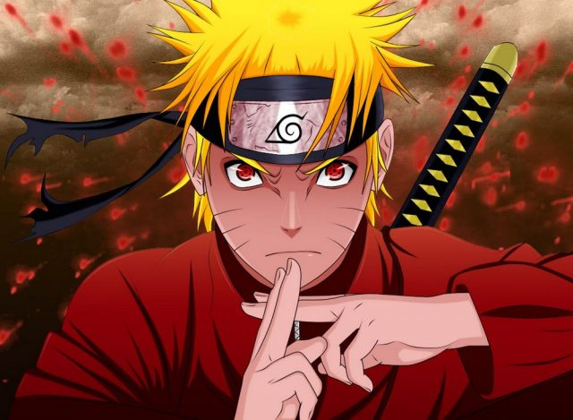
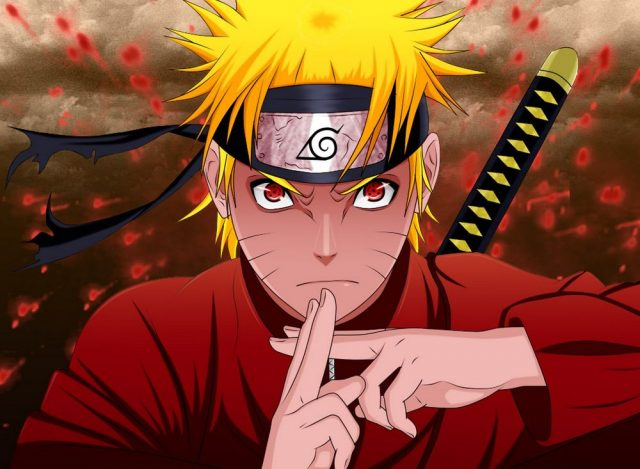
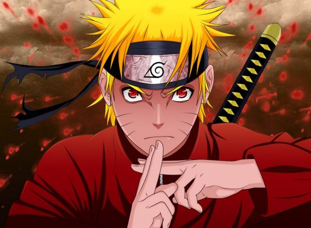
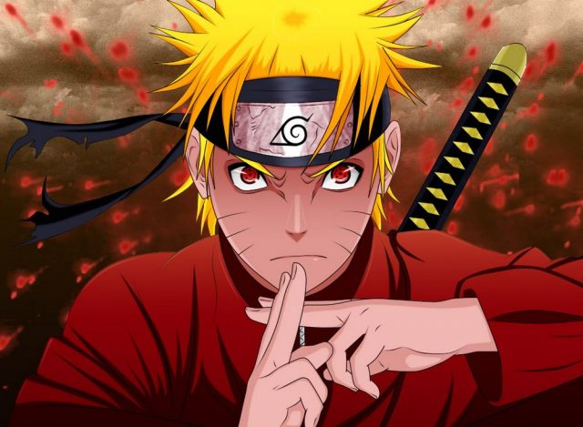

Действие начинается там же, аккурат с той же битвы, где завершился многоточием триквел. Причем тогда сценаристы позволили себе несколько вольностей и основательно переделали несколько моментов. Но в последней части решили оставаться максимально близко к канону. Очевидно, что новичкам здесь рады не будут. Нет, CyberConnect2 постаралась поведать предысторию конфликта — от самого первого поколения ниндзя до событий, приведших к последнему столкновению деревень шиноби. Авторы грамотно использовали для этого рассказ о детстве Какаши, происхождение Обито, его связь с Мадарой, озвучили извращенный план последнего по созданию «идеального мира». Но если ни одно имя из предыдущего предложения не кажется знакомым, то все старания создателей напрасны. Ведь это повесть длиною в несколько сотен глав, и знакомство с ней просто необходимо, чтобы понимать события UNS 4. Хотя бы на уровне общих событий из «вики».
Говоря о сюжете, нужно упомянуть, как он подается игроку. Игра разбита на главы, в каждой главе есть последовательный сюжет, порой разбитый на две параллельные ветки, пройдя обе ветки, игрок может продвинутся дальше. Эпизоды на ветках представляют из себя бои, чередующиеся с анимированными вставками, ближе к концу эти вставки почти полностью уступят роликам на движке. Битвы, анимированные моменты и ролики выглядят очень эпично и круто. Особенно те моменты, которые относятся к «настоящему», так как это почти финал истории и все герои достигли поистине монументальных способностей и сил. В кадре все время что-то рушится и взрывается. Герои испускают потоки энергии и сметают на своем пути все и вся. Во время прохождения сюжета игрок сможет поучавстовать во всех мыслимых развлечениях присущих манге, победить сотни солдат, побыть огромным монстром, сойтись в эпичной схватке один на одни с мощным противником, обрушить метеорит на головы врагов и многое другое.